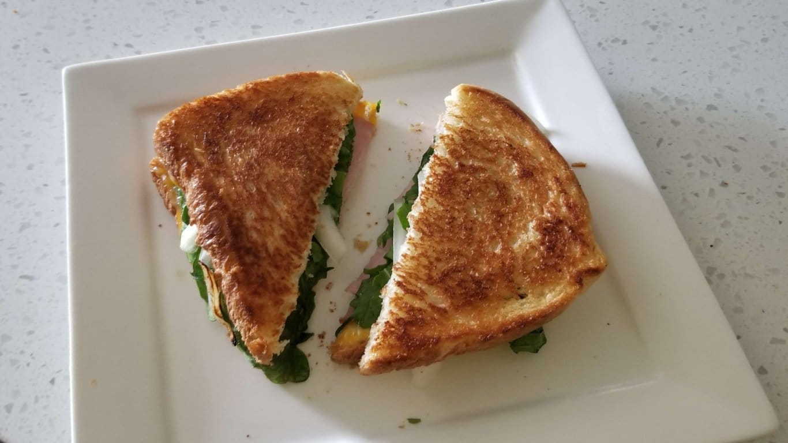
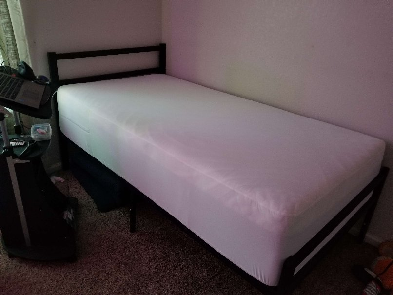

Yard Sale
June 17, 2023
As I have mentioned more than once on this site, I am moving, at least for a little while. This decision was made back in October, and ever since, we have been moving at a glacial pace. We sent our belongings overseas back in Februray, so I’ve been operating with maybe 30% of my belongings ever since. Pretty nuts!
The circumstances of the move are…not ideal, to leave it vague, and has been more out of necessity than anything, so everyone has been dragging their feet. Still, it looks like we truly will be leaving at the end of the month, and so, naturally, my mother and I held a garage sale today.
It was slow honestly, we didn’t sell all that much. But it was still interesting talking to the people who visited. Some were definitely hoarders who got up bright and early to do thrilling things like haggle down the price of a $2 candle, which is tedious at the best of times and downright excruciating before noon. But there were also lots of families and intersting people just looking for weird niche stuff, and that was nice.
This one guy with an aspirational Youtube son asked to buy the Gorillaz shirt I was wearing. I was taken off guard and told him it’s a very old shirt, one I’ve had since I was 13 and still shopped at Hot Topic. He emphatically explained that was why it was such a novelty–this was their best era, after all, but Demon Days shirts were few and far between! I felt a little bad telling him no, but Noodle and I are sticking together to the end.
{kind=link}
A different family bought my matching set of human and pet pajamas, which I’d used for thrilling Christmas photos with my cat before. I’m moving somewhere too hot to justify the warm PJs, and my cat has always loathed her outfit (sad since she looks so cute), so despite the heartache, I parted with it. I was overjoyed to discover that the little boy who selected these matching outfits intended to match with his pet rabbit. I wonder if the outfit will fit the rabbit?
I took a few pictures of things for sale that I’m attached to (albums, stuffed animals, clothes, books, trinkets), and I think I might try to turn them into PNGs and make a “shrine” (renamed to “Nexus” btw) of the items with little descriptions. Problem is I have so many pages in progress…
Anyways, after the sale was over, I packed what was leftover in the car and resolved to donate the rest tomorrow. Then I made a grilled ham, cheese, and arugula sandwich with garlic butter. It was pretty good, but I think it could be greatly improved. Next time!
{kind=link}
I was pretty tired, but determined not to take a late afternoon nap and destroy my sleep schedule again, I took a shower. By the time I got out, it was raining…it’s been raining a lot more than usual here lately, which is awful for my productivity since it makes me want to get all cozy in bed.
Speaking of which, due to some mattress musical chairs, I somehow ended up with two flimsy twins stacked on top of one another, which is a horrible nightmare state of affairs. They constantly slid away from each other and I’d fall off in the middle of the night. This was the status quo for months!
No longer! We got a mattress (which was so much drama it’d require another post…) that is far more respectable, so I decided to set that up for tomorrow’s inevitable rain induced nap.
It’s…comically tall? But comfortable, so it’s fine!
{kind=link}
Tossed all my linens in the wash to give myself the optimal first night after all this turmoil. Now everything is in the dryer and I’m taking a smoke/blog break.
Let’s see, what else…I guess I could review the site updates (there are many, most of them pretty small, but you’ve probably already noticed the navigation bar swapping places), but I don’t really feel like it! Ctrl + f5 if anything looks off. There’ll be more updates in a CSS post I’m planning…eventually.
I leave you all with this song in honor of the Noodle Shirt Incident.